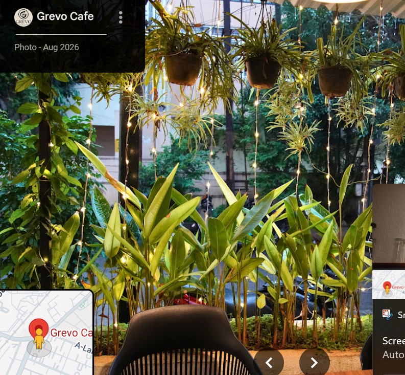
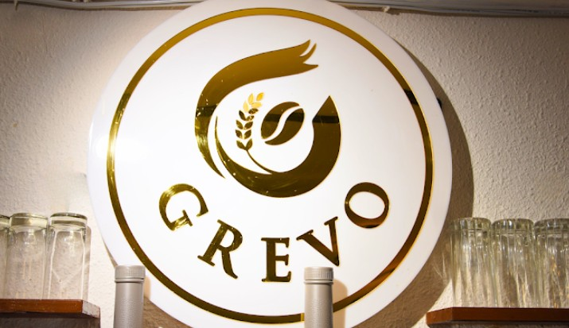
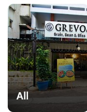

SOMETHING SWEET
Waffles & desserts
A sweet finish, or a reason to start with dessert.
YOUR EVERYDAY ESCAPE
Coffee to linger over. Plates made for sharing. A cosy corner for whatever the day brings.
A TABLE, YOUR WAY
Some days call for a strong coffee. Some call for something sweet. And some just need a comfortable place to catch up. Make room for all of it at Grevo.
Take a look around ↗
02 / FIND YOUR FAVOURITE CORNER
Let the city fade. Make yourself at home.

Make time for the
good little things.
A GLIMPSE INSIDE
Warm details, a little greenery, something good on the table. Your next favourite corner might be closer than you think.
Reference photography was cropped from screenshots supplied by the user. Replace with original, owner-approved photographs for the final website.

YOUR TABLE IS CALLING
Find us around Osmania University Circle, in DD Colony. Drop by for a coffee, a bite, or a little time well spent.
Ground Floor, B Phase, Osmania University Circle,
Shivam Road, DD Colony, Amberpet,
Hyderabad, Telangana 500007
Listed closing time: 11 PM
Please confirm today's hours before visiting.